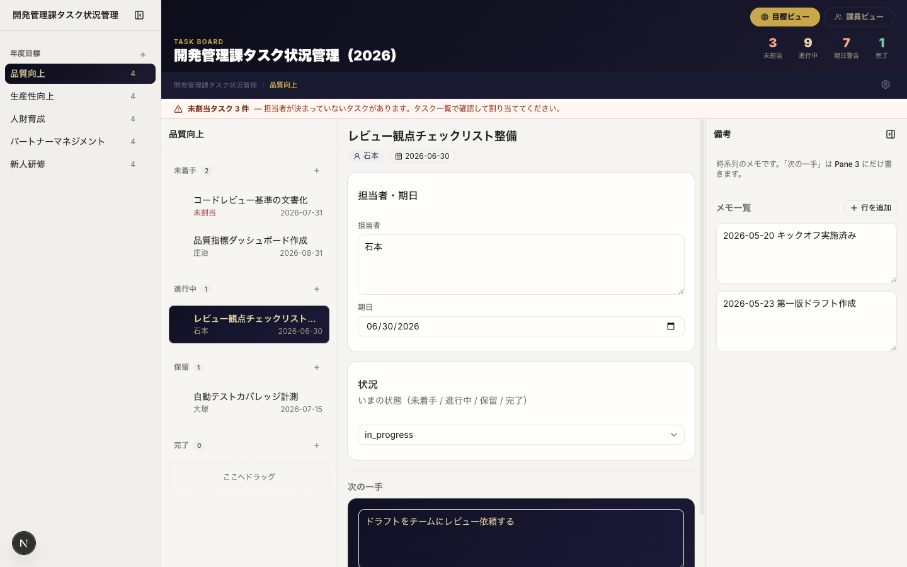
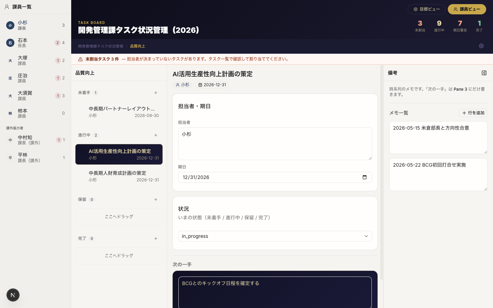

AI-Driven School / 月次課題
4ペインで「誰が・何を・いつまで」を1画面に並べ、
課長が作業を振る前に負荷と抜けを見える化するツール
このページで紹介する 4つのこと — 画面・課題・工夫・苦戦
SECTION 1
起動すると、左から右へ「ざっくり → くわしく」になる4ペインのワークスペースが立ち上がります。

起動直後の画面 — 目標ビュー（ヘッダー統計・未割当バナー・4ペイン）

課員ビュー — Pane 1 で担当者を選び、Pane 2 にその人のタスクだけ表示
ヘッダーには未割当・進行中・アラート・完了の件数があり、クリックでフィルタできます。
SECTION 2
4月着任の課長として、課員の作業が見えず不安だった——その状況から始まりました。
作業を振ろうとして「手がいっぱいです」と断られた。誰に頼めるか判断できない。
年度目標はあるが、日々のタスクが目標達成に結びついているか不明。
誰も抱えていないタスクが埋もれる。未割当を赤バナーで常に見せる。
Phase 1 は課長が自分で入力・整理して型を固める段階。 空欄は「まだ把握できていない箇所」として意味がある。
SECTION 3
便利機能を足すより、迷いどころを1つずつ消す方向に寄せました。
グリルで「Pane 1＝課員名」案は却下。目標達成への貢献が見えなくなるため。 担当者名は Pane 2 の各行に常時表示。課員ビューは Phase 1 の拡張として追加。
公式の次アクションと雑多なメモを分けないと、週次ミーティング前の確認が曖昧になる。 将来の会議音声文字起こしは Pane 4 が受け皿候補。
ヘッダーに表示している「未割当・進行中・期日警告・完了」の数字をクリックすると、 Pane 2 のタスク一覧がその条件だけに絞り込まれる。もう一度クリックで解除。 絞り込み中はフィルタバーが表示され、いま何を見ているかが分かる。
未割当専用列は却下（列が増えて見づらい）。 ヘッダー下の赤バナーと、各行の未割当バッジで二重に気づけるようにした。
SECTION 4
コードを書く時間より、「何を作らないか」を決める時間のほうが長かった。
Pane 1 を課員名にするか、年度目標にするか。Pane 3 と 4 を分けるか。 毎回「便利そう」な案が出るが、4ペインの一方向の流れが弱まる。
→ 結論：目標＝Pane 1、次の一手＝Pane 3 公式、備考＝Pane 4 のみ。ぶれ防止メモを残した。
最初に作った HTML モック（mockup-ideal.html）と、Next.js で動く画面の見た目がずれていた。 ダークヘッダー、選択時のゴールド、未割当バナー、フィルタ…と、気づいた差分を1項目ずつ直した。
→ 結論：「理想の画面」を先に作っておくと、実装で何が足りないか比較しやすかった。
本番公開でつまずきが続いた。コミット作者名の不一致、非公開リポジトリの制限、 GitHub Actions の設定ミス、デプロイが途中で止まる…と、原因を1つずつ潰していった。
→ 結論：リポジトリ公開・作者名統一・GitHub Actions 導入でようやく安定。画面作りとは別の学びだった。